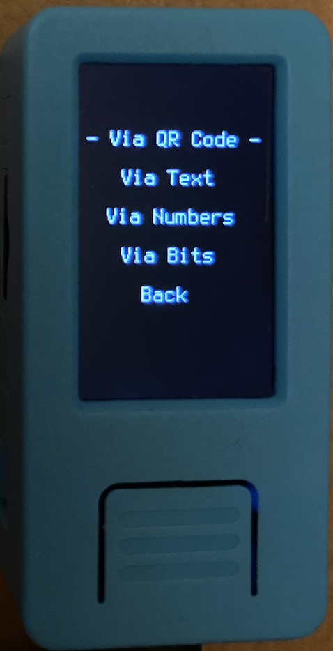
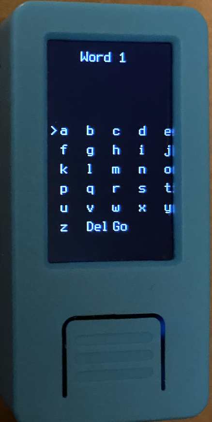
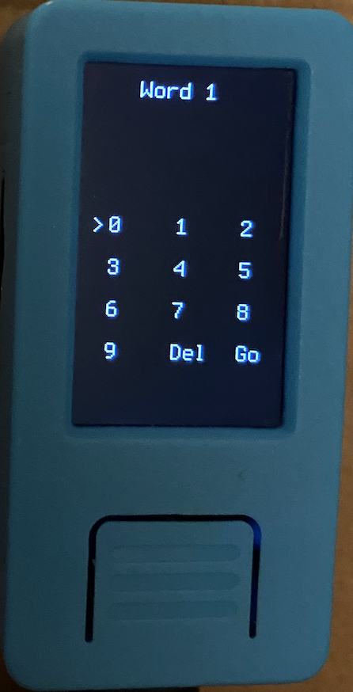
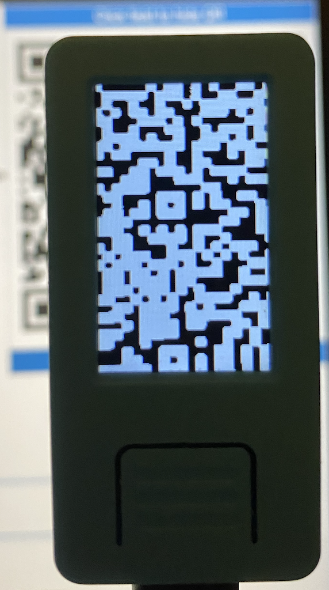
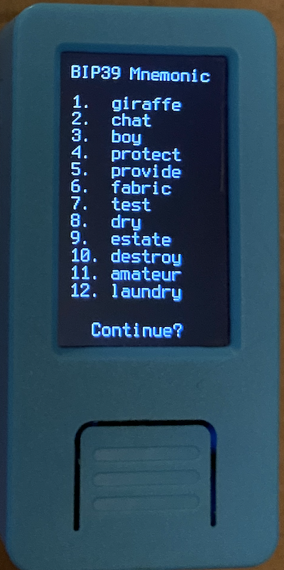
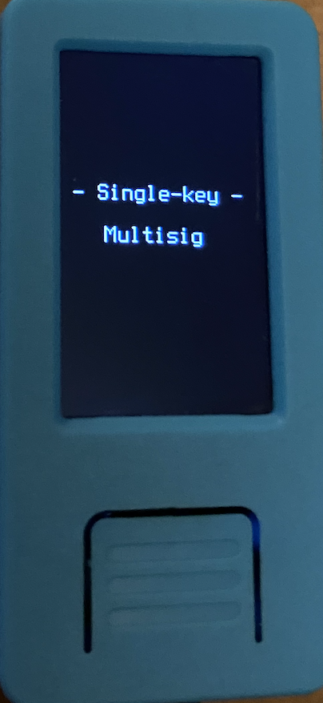

Loading a mnemonic
Once you have either a 12 or 24-word mnemonic, choose Load Mnemonic on Krux's start menu, and you will be presented with several input methods:

Input Methods¶
Via Text¶

Enter each word of your BIP-39 mnemonic one at a time. Krux will attempt to autocomplete your word to speed up the process.
On your 12th or 24th word, you can leave the word blank to have Krux generate the final word of your mnemonic for you. This is handy if you chose a manual method to generate your mnemonic and want the final word to be a valid checksum.
Via Numbers¶

Enter each word of your BIP-39 mnemonic as a number from 1 to 2048 one at a time. You can use this list for reference.
On your 12th or 24th word, you can leave the word blank to have Krux generate the final word of your mnemonic for you. This is handy if you chose a manual method to generate your mnemonic and want the final word to be a valid checksum.
Via Bits¶

Enter each word of your BIP-39 mnemonic as an 11-bit bitstring one at a time.
On your 12th or 24th word, you can leave the word blank to have Krux generate the final word of your mnemonic for you. This is handy if you chose a manual method to generate your mnemonic and want the final word to be a valid checksum.
Via QR¶

It's unpleasant having to manually enter 12 or 24 words each time you want to use Krux. To remedy this you can instead use the device's camera to read a QR code containing the words (encoded as a single space-separated text string). You can either use an offline QR code generator for this (ideally on an airgapped device), or you can attach a thermal printer to your Krux and print out the mnemonic after opening your wallet via one of the manual methods first. Check out the Printing section for more information.
Single-key or Multisig¶

Once you have entered your mnemonic, you will be presented with the full list of words to confirm.

After loading your mnemonic, you will be brought to a small menu asking if you want to use it as part of a Single-key or Multisig wallet.
Your choice here will subtly change the generated xpub that is used to set up your device in your wallet coordinator software. You can learn more about the difference in the following guides for using single-key and multisig wallets.
Now, onto the main menu...